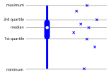
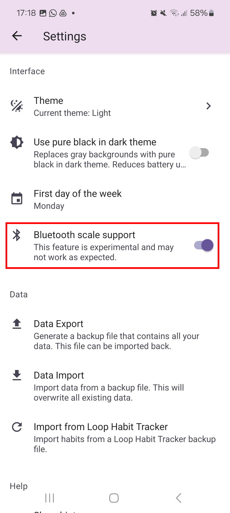
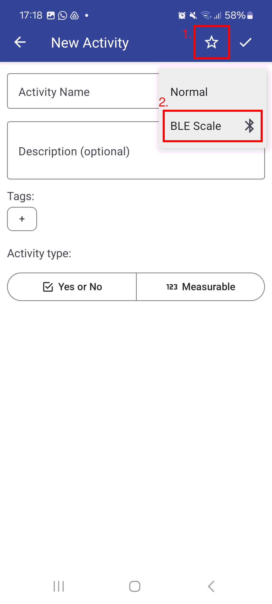
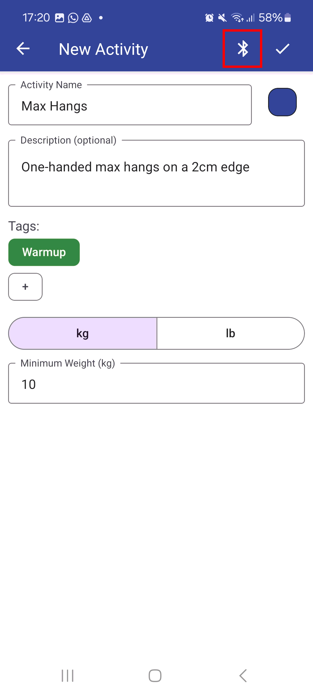
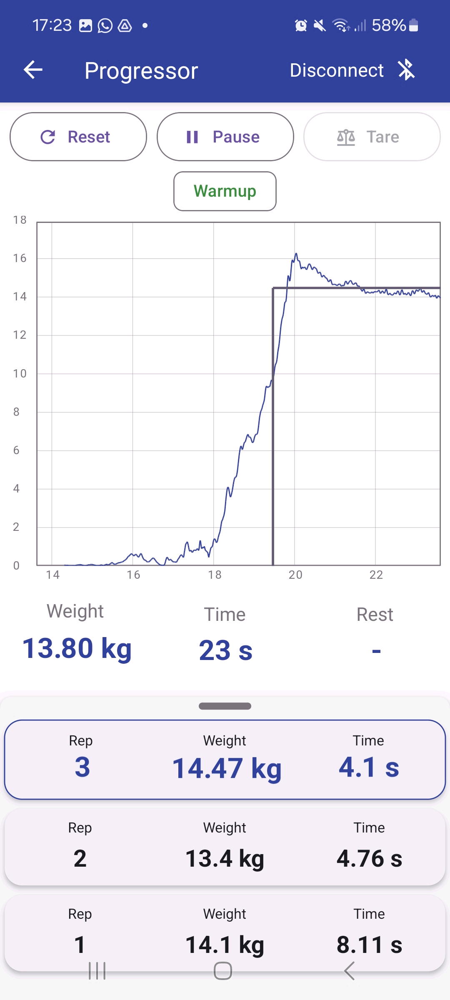

FAQ
What does the box plot show?
The box plot is a standard box-and-whisher plot, only styled differently. It shows the median, quartiles, minimum and maximum values in a given time bucket. By visualizing value distributions instead of a single value, it allows you to distinguish real patterns from noise.
Here is an example of how the box plot corresponds to the underlying data:

How to connect to Tindeq Progressor?




How to import data from another app?
Activity Tracker supports importing data from Loop Habit Tracker. You can find the import feature in Settings.
Other apps are not supported yet. As a workaround, you can try importing data by hand. This approach requires manual JSON data manipulation, and may not work in all cases.
- Export a data backup from Activity Tracker Settings,
- Carefully manipulate the backup file to add the required data, preserving its structure,
- Import the backup file back into Activity Tracker.